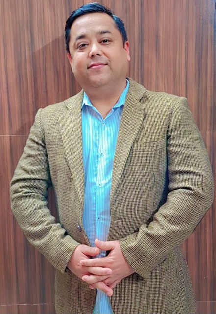

| QA Automation Engineer | AI-Agentic Test Automation | Python & Playwright | Web, Mobile & API Testing | QA Team Leadership, Metrics & Quality Excellence |

QA Automation Lead
QA Automation Lead and Quality Engineering professional with 13+ years of experience driving software quality, test automation, quality engineering strategy, release governance, and Agile delivery across Web, Mobile, API, Data, Healthcare, Financial Services, and Enterprise applications. Proven track record of delivering 80–85% automation coverage across targeted regression and critical QA workflows, managing a 480-test automation suite, reducing regression execution time from 15–20 hours to just 3 hours and 42-50 minutes, cutting manual testing effort by 70–80%, and reducing defect leakage by 61%.
Strong hands-on expertise in Python, JavaScript, Selenium, Playwright, Cypress, Appium, REST API automation, SQL, CI/CD integration, Jira, and Azure DevOps, with experience in scalable automation frameworks, end-to-end testing, backend validation, and release readiness. Actively advancing AI-driven quality engineering through AI-assisted testing, Generative AI validation, LLM testing, RAG pipeline evaluation, AI chatbot quality assurance, hallucination detection, and conversational reliability, while exploring AI Agents and Model Context Protocol (MCP) integrations.
Combines technical depth with strategic quality ownership, cross-functional collaboration, stakeholder management, and team mentorship to strengthen test effectiveness, accelerate release cycles, improve product reliability, and align quality engineering initiatives with business outcomes. Passionate about building scalable, intelligent, and data-driven testing solutions that evolve traditional QA into modern, AI-enabled quality engineering.
My mission is to ensure that every product I test meets the highest standards of functionality, reliability, performance, and user experience. I strive to identify defects early, prevent issues from reaching end users, protect critical business workflows, and contribute to delivering high-quality, reliable software releases.
👁️ MY VISION
My vision is to become a highly trusted QA professional recognized for precision, consistency, analytical thinking, and technical expertise. I aspire to continuously enhance my skills in advanced testing methodologies, embrace emerging technologies, and contribute to building innovative digital products that deliver seamless user experiences and create a meaningful impact worldwide.
What I do
Test Automation
Python suite of 480 tests: 160 Web UI, 250 Mobile, 70 API
Playwright for web, Appium on BrowserStack for mobile, REST for API
Runs on Bitrise and GitHub
Cut regression cycle from 15-20 hours (manual) to 3h 42m with a 190-test automated regression suite across Web, Mobile and API
Automated 70-80% of existing manual test cases, covering 80-85% of requirements and user stories
Reduced production defects by about 61% (about 18 to 7), comparing six months before and after automation
Built a custom HTML execution report for the mobile suite, shared automatically on Slack after each run
Reduced manual testing effort by 70-80%, freeing the team for exploratory and risk-based testing
AI-Assisted Quality
Test-case generation from requirements: Claude reads Jira/Confluence requirements, uses a custom skill file to create test cases and steps, adds them to Jira, and notifies the team on Slack for review
Self-healing locators for Mobile and Web: Claude (via MCP) inspects page source, finds a replacement locator and applies it. The original is kept as a fallback and test code is not modified
Claude with Playwright MCP: explore the application and help write Python Playwright tests faster
Built the Sprint Release Conductor (Claude, MCP, Bitrise, Slack): checks daily whether the sprint build was triggered, flags failed builds to the Sprint RC and Leads channels, and generates the report emailed on ship date. The team uses it daily
Developed MCP_connectors.py, a reusable module linking Claude to the web and mobile apps under test, Jira and Confluence
Hands-on with LLM testing, RAG pipeline evaluation, chatbot QA and hallucination detection
QA Leadership
Lead a team of 4 QA engineers: mentor 2 direct reports on career growth, and assign sprint work, review automation code and resolve blockers for the other 2
Risk-based QA strategy, automation roadmaps, quality gates and release criteria aligned to product timelines
Release readiness and quality reporting for stakeholders each sprint
Previously led a 5-member QA team at GlobalLogic for 8 years across Agile projects, owning strategy, estimation, execution and release readiness
Represented QA in customer steering committees and UAT, production readiness and go-live
Brought QA into design phases to identify quality risks early (shift-left)
Recognized with the Engineer Excellence Award (2018 and 2020) and Spot/Kudos awards for QA leadership
The results
Impact
3h 42mRegression cycle, down from 15–20 hours manual
61%Fewer production defects, about 18 down to 7 over 6-month windows
Checks daily whether the sprint build was triggered, then tells QA to start testing or prompts the release channel. Claude writes the Slack messages, failure summaries and the ship-date report.
Claude · Jira · Confluence · Slack
AI-assisted test-case generation
Team review in Slack
Claude reads requirements, uses a custom skill file to write test cases and steps, adds them to Jira and pings Slack for review.
Mobile and web · MCP
Self-healing locators
Test code never modified
When a locator fails, Claude inspects the page source and applies a replacement. Healed locators live in a separate store with the original kept as fallback.
Python framework
MCP connector module
Powers both workflows
MCP_connectors.py links Claude to the apps under test, Jira and Confluence, and runs test-case generation and self-healing.
Where I’ve worked
Experience
Senior QA Engineer | QA Automation & AI Quality Engineering
Twin Health Inc. | Chennai, India | Mar 2022 – Present
Lead a team of 4 QA engineers. For 2 direct reports, I plan career growth and mentor them. For the other 2, I assign sprint work and review their automation code, resolve blockers and help plan sprint work.
Maintain and extend a Python automation suite of 480 tests: 160 Web UI (Playwright), 250 Mobile (Appium on BrowserStack) and 70 API (REST). Tests run through Bitrise and GitHub.
Reduced regression cycle time from 15–20 hours (manual) to 3h 42m with a 190-test automated regression suite across Web, Mobile and API.
Automated 70–80% of the existing manual test cases. The automated tests cover 80–85% of requirements and user stories.
Production defects fell by about 61% (from about 18 to 7), comparing the 6 months before automation with the 6 months after.
Use Claude with Playwright MCP on the Web UI suite to explore the application and help write Playwright tests in Python. Standard runs use Python Playwright.
Built a custom HTML execution report for the mobile suite, generated after test runs and shared through Slack.
SELECTED PROJECTS AND AUTOMATION WORK (Under Current Company)
Built with Claude and MCP, triggered by a Bitrise cron or Slack. Scripted logic checks daily whether the sprint build has been triggered and sends a message to the QA channel (start testing) or the Sprint RC channel (trigger the build).
Claude, connected to Slack and Bitrise through MCP, writes the Slack messages and failure summaries and generates the report emailed on sprint ship date. Failed builds are flagged to the Sprint RC and Leads channels. The team uses it daily.
AI-Assisted Test-Case Generation
Built a workflow where Claude reads requirements from Jira or Confluence pages, uses a custom skill file to create test cases and test steps, adds them to Jira, and sends a Slack message so the team can review them.
Self-Healing Locators (Mobile and Web)
When a locator fails and the framework’s retry option is enabled, Claude (through MCP) inspects the page source, finds a replacement and applies it. The healed locator is saved in a separate store that the framework reads on later runs. The original locator is kept as a fallback, and test code is not modified.
MCP Connector Module
Developed MCP_connectors.py in the Python framework to link Claude to the web and mobile apps under test, Jira and Confluence. The test-case generation workflow and self-healing run through it.
QA Associate Consultant – QA
GlobalLogic | Noida, Uttar Pradesh, India | Jun 2014 – Mar 2022
Led a 5-member QA engineering team across Agile projects, owning test strategy, planning, estimation, execution, quality reporting, mentoring, and release readiness.
Defined risk-based QA strategies, automation roadmaps, test plans, quality gates, and release criteria aligned with product requirements and delivery timelines.
Led mobile automation initiatives using Appium, Android Studio, Xcode, and BrowserStack across Android and iOS applications.
Established QA–Product–DevOps collaboration for defect resolution, environment readiness, release planning, UAT, and continuous delivery.
Represented QA in customer steering committees and provided quality leadership through UAT, production readiness, go-live, and post-release quality activities.
Mentored QA engineers on automation engineering, testing practices, Agile delivery, troubleshooting, and technical problem solving.
Contributed QA expertise during solution and software design phases through IT project steering committees, identifying quality risks early in the lifecycle.
Supported performance testing and capacity-related quality activities while prioritizing QA workload across sprint-based delivery.
QA Analyst & Project Coordinator
TechnoScore | New Delhi, India | Aug 2013 – Jun 2014
Coordinated end-to-end QA activities for enterprise Web applications, including test planning, estimation, execution, defect management, reporting, and release preparation.
Created test plans, QA processes, project documentation, and QA status reports aligned with client expectations.
Managed client communication, training, troubleshooting, and issue resolution related to testing activities.
Facilitated weekly project meetings and coordinated QA dependencies across client, development, and delivery stakeholders.
Applied Agile practices to sprint execution and maintained visibility of testing progress against delivery milestones.
Associate
OCADO, ASDA (Walmart), ARYZTA AG | United Kingdom | Aug 2012 – Jan 2013
I am interested in opportunities to advance software quality through rigorous testing practices, test automation, AI-driven testing, agentic AI, and LLM-powered solutions. My focus is on leveraging emerging technologies to optimize test coverage, improve defect detection, enhance testing efficiency, and deliver reliable, high-quality software that meets business objectives and user expectations.